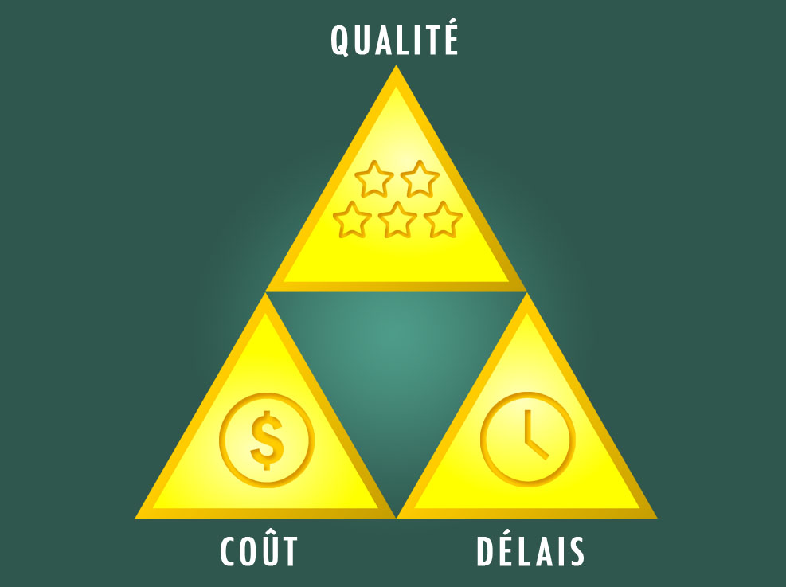
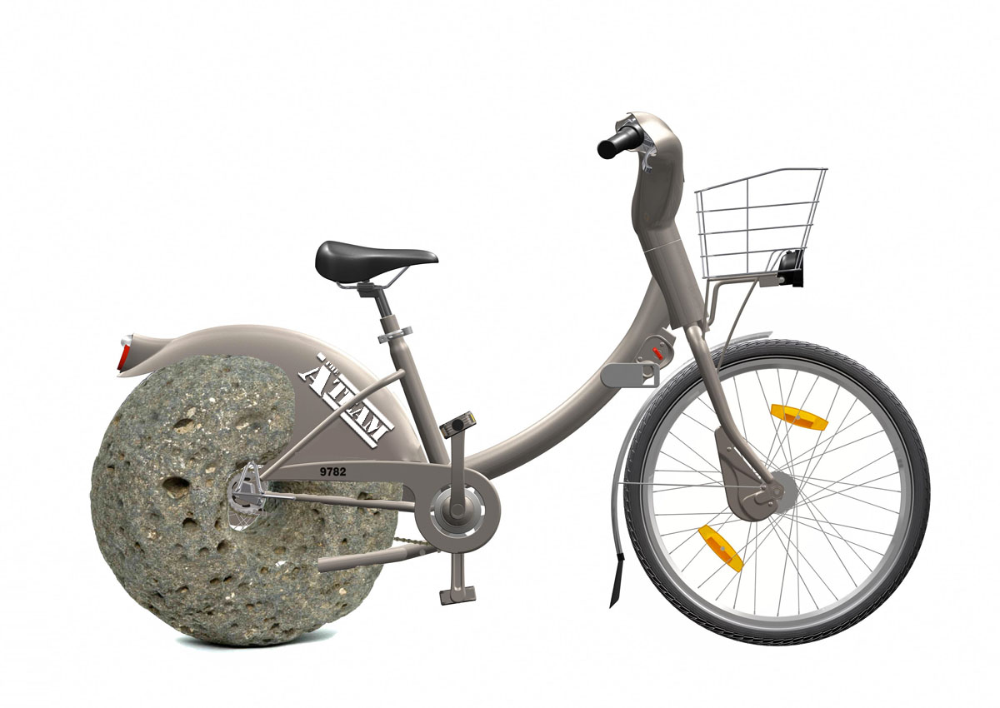
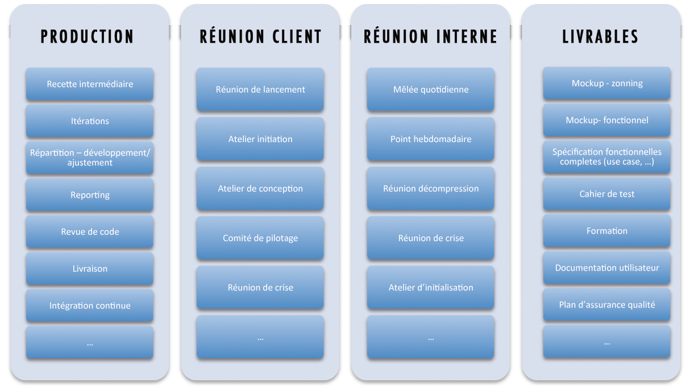

Petite histoire d’une méthodologie agilement établie
Construire simplement sa propre méthode
Proposé par Julien OGER - @JulienOG / Alexandre JAKUBIAK @letitou
Julien OGER - @JulienOG
- Chef de projet psychorigide
- Responsable Méthodologie
- 12 ans de projets Web
A débuggé sous IE 5
Alexandre JAKUBIAK - @letitou
- Chef de projet intrépide
- Responsable Forfait / TMA
- Dans le Web depuis 2001
Firefox n'existait pas
 TEAM - #souplineux
TEAM - #souplineux

Les méthodes agiles (ou pas)...
... UN SUJET TROP LARGE Pour 45 minutes
On vous prévient tout de suite...
On va pas vous vendre du rêve !


Les méthodes classiques
Des méthodes peu adaptées à nos métiers !
Quid de l'utilité de ces méthodes ?
...Et puis vint l'agilité !
Communication et interactions
Collaboration / Co-création
Favoriser la production
Rester souple avec le changement !
Pourquoi réinventer la roue ?

- RAD / DSDM / ASD / FDD
- RUP / 2TUP
- Crystal clear
- Scrum
- XP
Une limite principale ...
...l'hétérogénéité des projets !
Et pourquoi pas une remise en question ?
Alors on a créé notre méthode !
Question 1 :
Quels sont les objectifs ?
Question 2 :
De quoi on part ?
Question 3 :
Comment je mets tout ça en oeuvre ?
1. D'abord se pencher sur les objectifs
Les objectifs client...
Satisfaction
...VS les objectifs de la maîtrise d'oeuvre !
Maîtrise et Epanouissement
Piloter par les délais !
UNE IDÉE ''SIMPLE''
Être AGILE avec les méthodes ... AGILES avec les méthodes ... AGILES avec les méthodes ... AGILES avec les méthodes ... AGILES avec les méthodes ... AGILES avec les méthodes ... AGILES avec les méthodes ... AGILES
Principales erreurs à éviter
- Ne pas considérer l'avant-vente
- Ne pas prendre en compte les outils
- Mal définir les rôles
2. Les moyens à disposition
3 notions importantes
- Concepts
- ↓
-
Actions
Traduit un CONCEPT - ↓
-
Outils
Support de l'ACTION
Des Concepts à profusion
Des Actions

Des Outils
[IMG - shoot d'écran paint schéma + reporting postit + tete de dinesh Dinesh]
De ''VRAIS'' Outils
[IMG - Schéma Réel]
3. Mise en oeuvre
2 approches simples
- Partir "From Scratch"
- OU
- Altérer l'existant
Connais-toi toi même !
- Qui suis-je ?
- Quel est mon métier ?
- Quels sont mes offres ?
- Quel est mon objectif ?
Que puis-je ? Que sais-je ?
- De tes connaissances et méconnaissances conscience tu auras !
- De tes capacités, réaliste tu resteras.
''Tu vas rentrer chez toi et réfléchir à ton avenir...''
Créer l'ADN de sa méthode...
- Utile dans tous les cas
- Soyez modeste !
... Y Inclure une dose de variation
-
PREDICTIF
En fonction de ses métiers / de ses offres -
REACTIF
En fonction des impératifs client
Un suivi indispensable
-
QUAND ?
En cours de projet
En fin de projet -
COMMENT ?
En restant objectif et critique -
POURQUOI ?
Amélioration continue de sa méthode
Conduite du changement
Retour d'expérience
Une utopie ?
Oui
Le risque existe
Mais il demeure limité avec une constante : L'EXPERIENCE
Rester positif
- Garder confiance
- Accepter les petits échecs On peut faire des erreurs mais jamais 2 fois la même ! [IMG - Emile]
- On apprend rien sans se faire mal